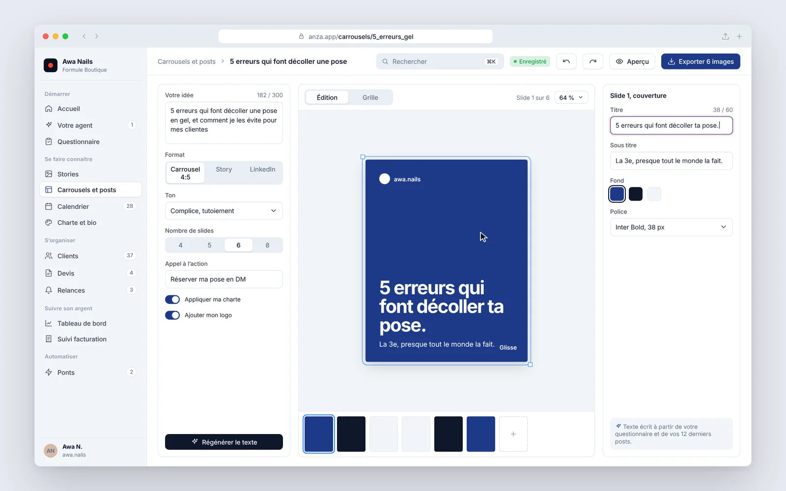
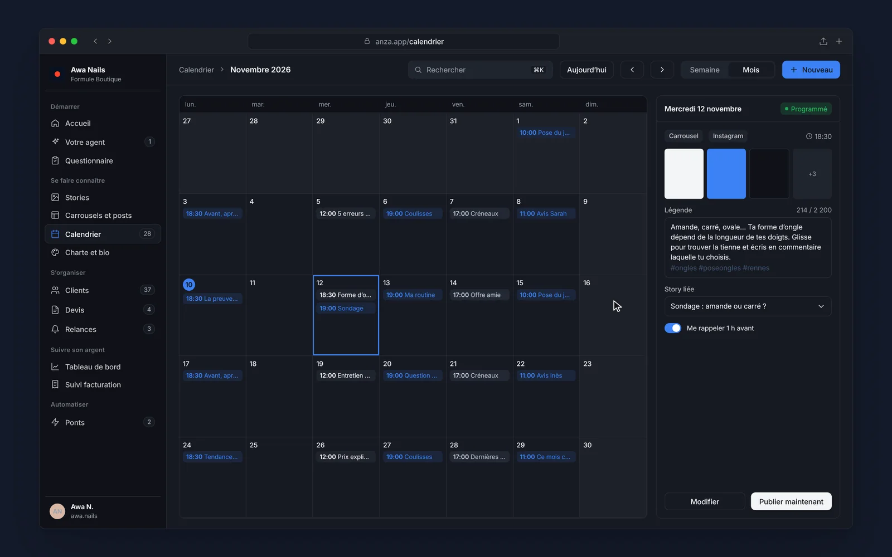
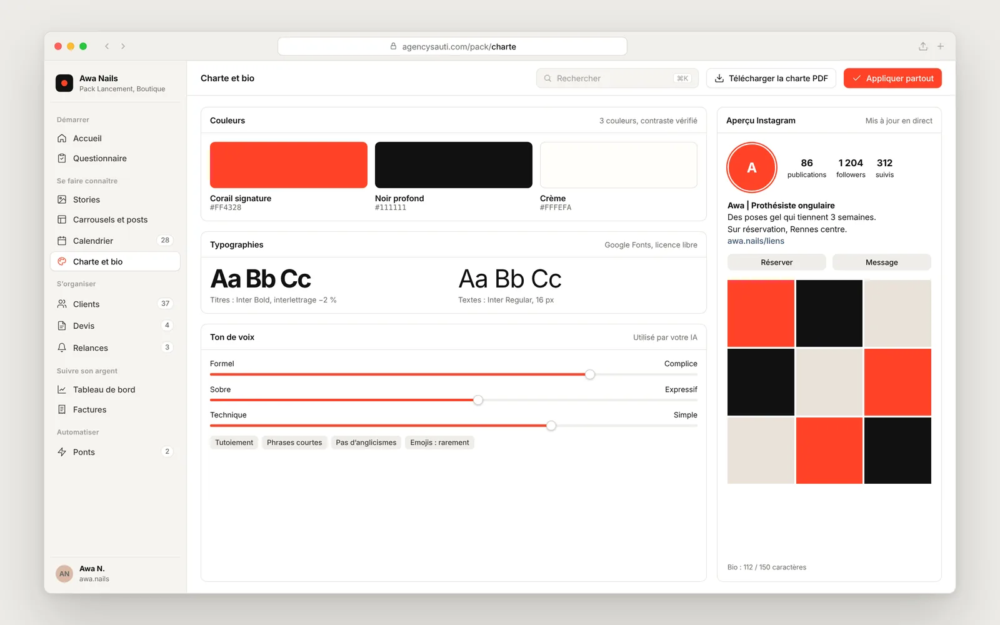

01
Se faire connaître
Marketing
Message et voix, production et diffusion : on écrit avec vos mots et on publie avec régularité.- Séquenceur de stories
Un texte et quelques photos deviennent une séquence de 6 à 8 stories qui raconte quelque chose.
- Carrousels et posts
Générés à votre charte, prêts pour Instagram et LinkedIn.
- Calendrier de 4 semaines
Quoi publier, quel jour, avec les textes déjà écrits.
- Charte visuelle et bio
Couleurs, typographies, bio Instagram et page lien en bio.
Dans l’outil


